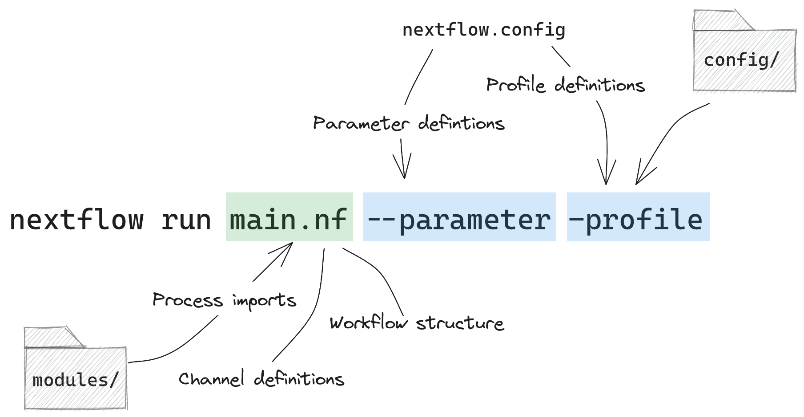

The template
We developed the Nextflow DSL2 template to aid beginners in learning Nextflow and developing their own workflows. The template employs a basic framework that allows users to customise and extend the workflow while adhering to code management best practices.
The workflow code-base is organised into a number of different executable files and directories. This organisaiton promotes code modularity, reusability, maintainability, and clarity. Each executable file included in the template contains comment lines, links to relevant Nextflow documentation, and implementation examples. To apply the template to your own workflows, you will need to replace examples with your own code.
Modularising the code base and splitting workflow processes and configuration files offers a few benefits:
- Code organisation and maintainability
- Readability and clarity
- Collaboration
- Testing and debugging
- Code reuse and extensibility
Set up
Requirements:
- A GitHub account
- Installed on your chosen development environment:
Clone the template
- Open the DSL2 template repository on GitHub
- Select the Use this template box and create a new repository
- Name your repository, ending in
-nf(this is required by cookiecutter gh action) - Select the Create repository from template box
Once you create a new repository using this template, a GitHub Action workflow will automatically be deployed. This workflow will populate your new repository with the skeleton template directory.
We recommend working in a development environment like VS Code to work with this template. If you’re working with VS Code, use the nf-core-extensionpack for some nice features like syntax highlighting. You can clone your copy of the template to your environment using git.
For example:
git clone https://github.com/georgiesamaha/myWorkflow-nf.gitDownload Nextflow
Depending on the system you’re working on there are a few options for installing and running Nextflow including reproducible options like bioconda and Singularity. See here for installation instructions.
Once you have installed Nextflow, you can configure it to run on your system. See here for some set up tips.
Template structure
Nextflow is highly flexible, allowing users to implement workflows in a number of different ways. In this template, we provide one common implementation for structuring your Nextflow code base in a way that is easy to maintain and read.
The template’s code repository is organised into a number of files and directories (see the template components for details):
myWorkflow-nf
├── .github/ISSUE_TEMPLATE
├── assets
├── bin
├── config
├── modules
├── main.nf
├── LICENSE
├── README.md
└── nextflow.configConsider a basic Nextflow run command below, where a user will need to specify parameters and (optionally) a configuration profile:

- The
main.nffile is the executable file that identifies the workflow structure, inputs, and processes to pull form themodules/directory. - The
--parameterflag matches a parameter initialised in thenextflow.configfile and applies it to the workflow execution. - The
-profileflag is used to specify environment-specific configuration details such as a software implementation method and/or resource management.
Running a workflow that follows this template will output:
- A customisable execution message invoked when the workflow is run
- A customisable help message invoked using
--helpor failing to supply a required parameter - A customisable completion message invoked when the workflow has finished running
- Files generated by your processes, optionally these can be saved to a results directory
- Workflow execution resource usage, trace, and timeline reports
Use the template
This template currently contains 3 processes as as part of the demo workflow. To use this workflow yourself, you will need to delete any processes associated with the demo. Each line of code inside the nextflow.config and main.nf associated with the demo workflow is prefixed by a comment line // DEMO CODE: DELETE FOR YOUR OWN WORKFLOWS.
Delete the 3 demo process files (modules/check_input.nf, modules/group_samples.nf, modules/generate_report.nf) and use the template_process.nf to structure your own processes.
See the template_components sections in this user guide for what how to use all directories and files provided in this template.